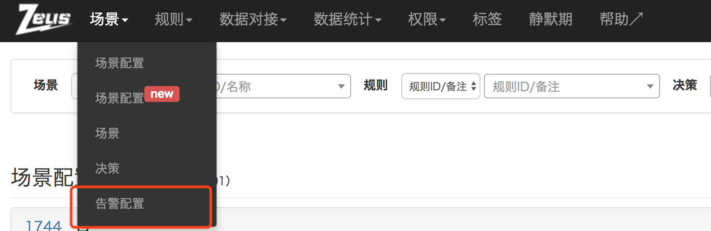
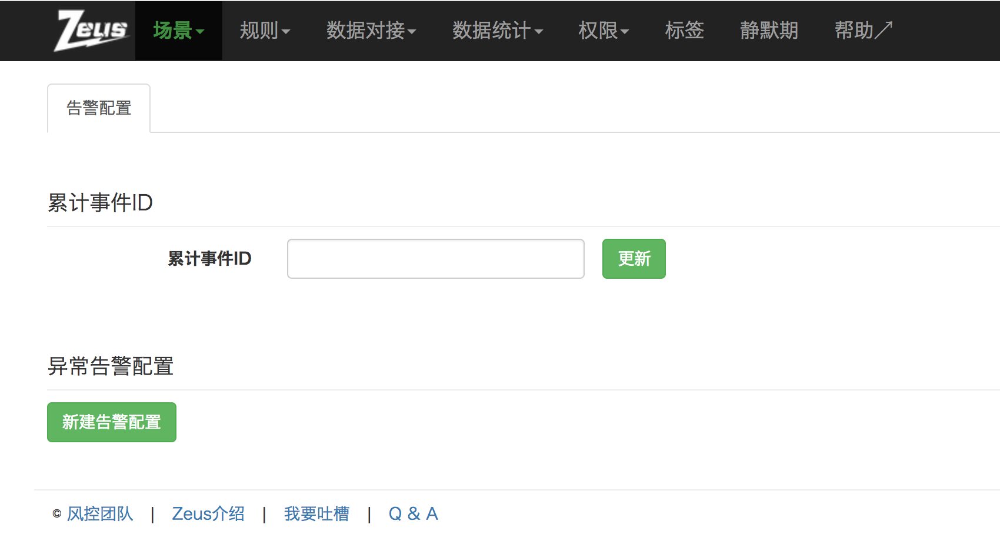
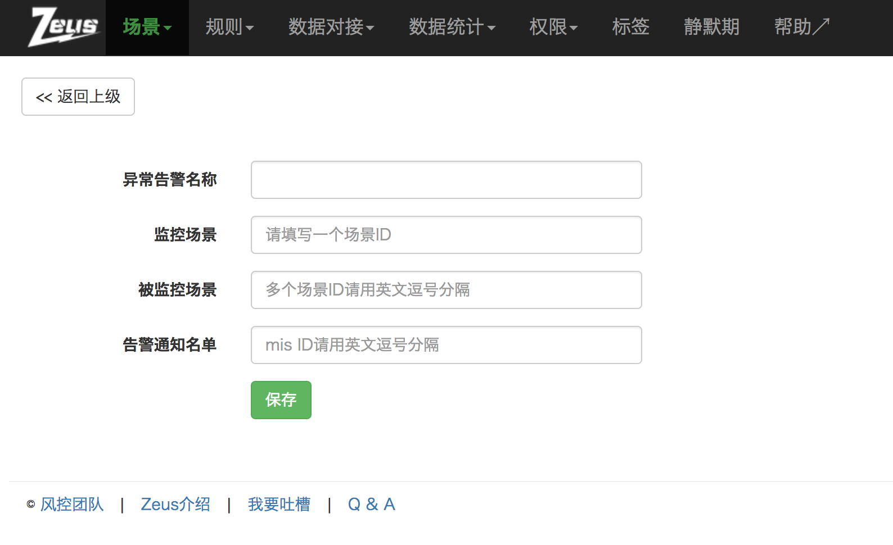
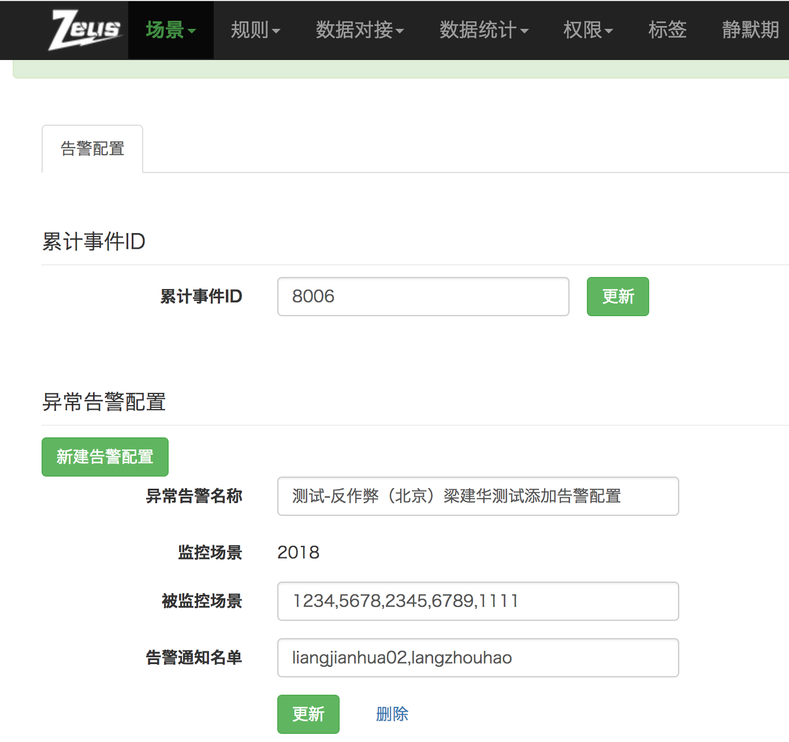
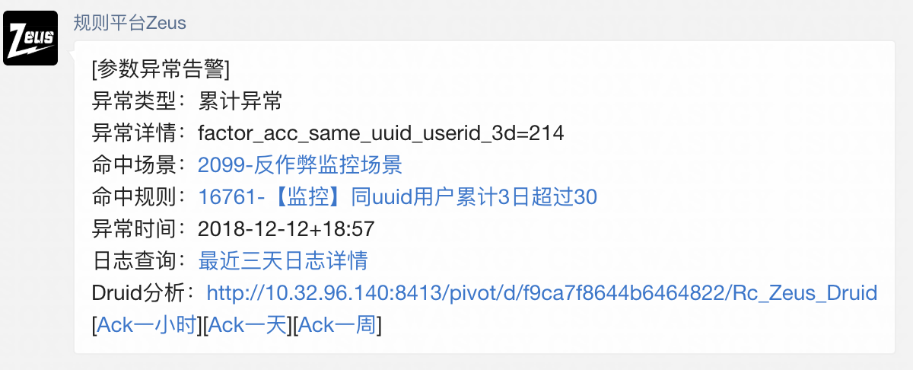
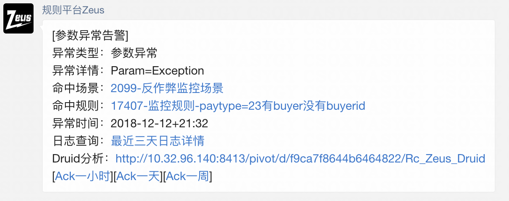

说明：参数异常告警使用指南
一、新功能介绍
参数异常告警允许用户配置告警场景，实时监控某些参数、累计的异常情况，根据配置的规则最终通过大象报出。
支持报出两类异常：1、参数异常；2、累计异常。
举例来说：比如某业务下输入了一些异常参数（即：某些参数值不正常，比如userid输入不应该为null，结果你输入了个userid=null），包括一些累计异常（比如uuid != null累计超过30次对业务来说已经不正常了）这些都会导致线上规则误伤，参数异常告警要做的就是实时报出此类异常。
二、准备工作
1、创建监控场景：一个业务下允许创建多个监控场景，监控场景和普通场景一样，只是里面的规则是针对异常参数或者异常累计编写的。
监控场景里配置的规则限制：
如果要监控的是参数异常：规则里不可以有累计因子，其他参数、因子正常使用。
如果要监控的是累计异常：规则里只允许有一个累计因子，不可以有参数或者其他因子。如果配置了多个累计因子，大象报出异常信息的时候只会报出一个。
2、创建监控专用累计事件：为防止影响其他场景读/写累计，异常监控相关的累计使用一个单独的累计事件，存储在单独的tair，完全隔离。
三、使用说明
使用该功能只需在zeus页面进行相关告警配置即可，具体操作如下：
1、点击“场景”->“告警配置”进入告警配置页面

初始化告警配置页面如下：

2、在告警配置页面配置相关配置项
2.1、首先在“累计事件ID”后面的输入框里填入新创建的监控专用累计事件ID，点击“更新”保存。
监控专用累计事件一个业务只有一个，支持修改
没有累计事件ID无法新建告警配置
2.2、点击“新建告警配置”，新建一个告警配置如下：
- 告警名称：随意填写，为告警起个名字而已。
- 监控场景：填写在准备阶段创建的监控场景ID，这里只支持填写一个场景ID，如果你创建了多个，那就在新建几个告警配置。
- 被监控场景：填写要监控的普通场景（在这里非监控场景都视为普通场景），填进去的场景流量都会过监控场景，跑一遍监控场景里的规则。此处支持all，表示监控当前业务下所有场景（即全部流量都会过监控场景，此时流量较大，慎重选择）。
- 告警通知名单：此处填写mis id，当发生异常时会将告警信息通过大象发给指定人。

至此就完成了一个告警配置的填写。如果需要创建多个告警配置，重复执行2.2即可。

3、最后通过大象报出异常情况如下


【注意事项】
- 一个业务使用一个监控场景基本够用，尽量避免创建过多监控场景。
- 尽量精确填写被监控场景，不要随意填"all"，此时流量较大，集群有被打挂风险。
- 监控场景里的规则：标记不通过大象报出，生效才报出，但标记和生效都会过监控场景，查日志都可以查到场景、规则命中情况。
- 需要报出累计异常时，累计条件和按何累计尽量写的严格些，避免类似“sceneId > 0”这样宽泛的条件，防止产生累计热点key问题。
有问题欢迎反馈zeus RD@梁建华 @郎周皓 @王东 @罗昊 @吕笑千 @马玉洁 @杜方宇 @杨飞菲